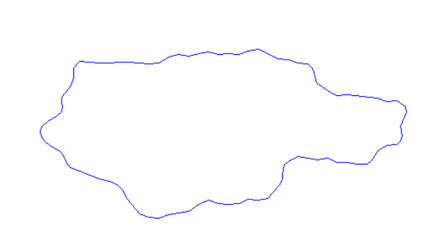
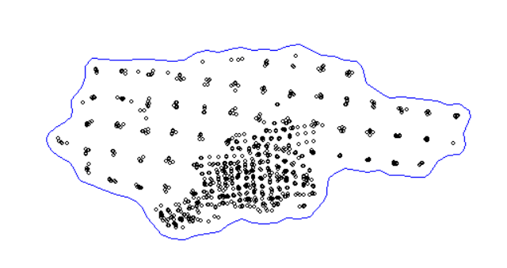
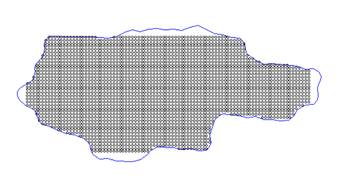
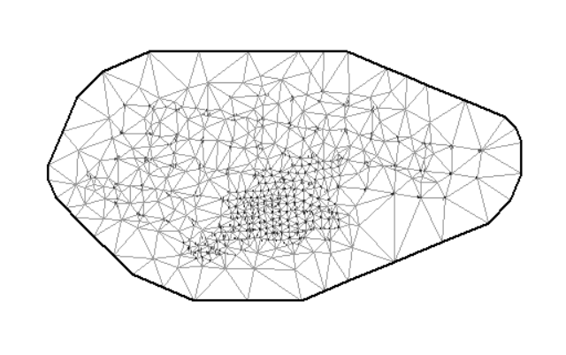
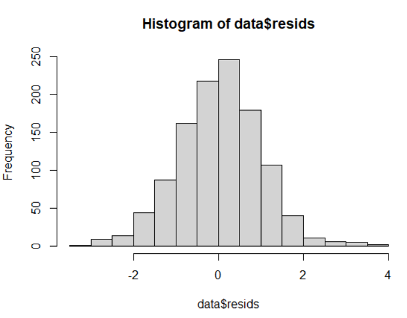
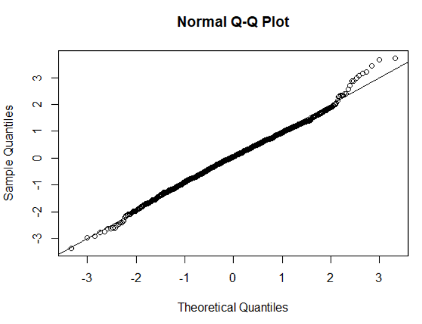
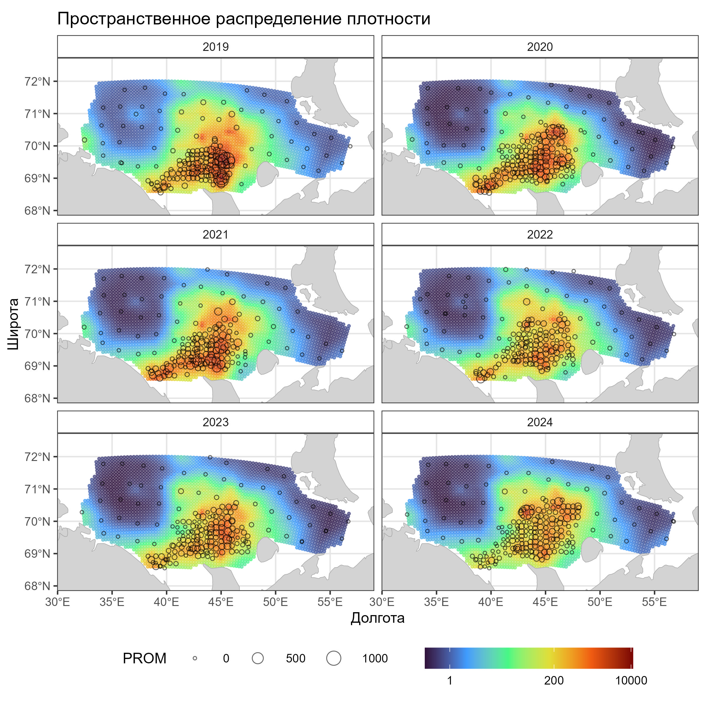
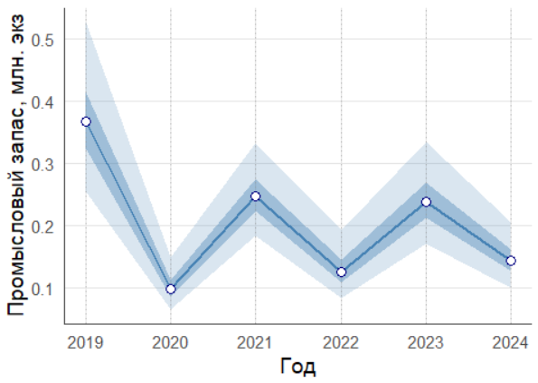

# ---------------------------
# 1. ПОДГОТОВКА СРЕДЫ И ДАННЫХ
# ---------------------------
# Очистка рабочей среды
rm(list = ls())
# Установка рабочей директории (замените на свою)
setwd("C:/COMBINE/")
# Загрузка необходимых пакетов
library(readxl) # Для чтения Excel-файлов
library(ggplot2) # Визуализация данных
library(dplyr) # Обработка данных
library(sdmTMB) # Пространственно-временное моделирование
library(INLA) # Продвинутые пространственные модели
library(sp) # Классы для пространственных данных
library(sf) # Пространственные данные (современный формат)
library(rnaturalearth) # Загрузка картографических данных
# Загрузка данных из Excel-файла
data <- readxl::read_excel("KARTOGRAPHIC.xlsx", sheet = "SURVEY")
# Просмотр структуры данных
str(data)5 sdmTMB - оценка и визуализация индекса обилия по съемке
5.1 Введение
Оценка индекса промыслового запаса камчатского краба в Баренцевом море с использованием пространственно-временного моделирования (библиотека R: sdmTMB)
Цель:
Продемонстрировать применение современных методов SDM (Species Distribution Modeling) и GAMM (Generalized Additive Mixed Models) для стандартизации оценки запасов промысловых видов на примере камчатского краба.
Ключевые аспекты:
Подготовка данных:
Преобразование координат в проекцию UTM (км)
Фильтрация данных через выпуклую оболочку (convex hull)
Создание прогнозной сетки с шагом 10 км (2 км)
Моделирование:
Построение треугольной сетки (mesh) для учета пространственной автокорреляции
Подбор модели sdmTMB с пространственно-временными случайными эффектами
Учет ключевых факторов: температура, глубина, тип съемки
Визуализация:
Карты распределения плотности с наложением данных съемок
Динамика индекса обилия с 50% и 95% доверительными интервалами
Для работы скрипта:
Скачайте файл данных (KARTOGRAPHIC.xlsx)
Установите рабочую директорию в setwd()
Установите необходимые пакеты (см. начало скрипта).
5.2 Базовая оценка
Должно выглядеть так:
> str(data)
tibble [1,126 x 20] (S3: tbl_df/tbl/data.frame)
$ NUM : num [1:1126] 1 2 3 4 5 6 7 8 9 10 ...
$ CALL : chr [1:1126] "UFJN" "UFJN" "UFJN" "UFJN" ...
$ CRUSE : num [1:1126] 112 112 112 112 112 112 112 112 112 112 ...
$ SURV : chr [1:1126] "SUM" "SUM" "SUM" "SUM" ...
$ TRAL : num [1:1126] 2 3 5 7 9 11 13 15 17 19 ...
$ DATE : POSIXct[1:1126], format: "2019-08-16" "2019-08-16" ...
$ MONTH : num [1:1126] 8 8 8 8 8 8 8 8 8 8 ...
$ YEAR : num [1:1126] 2019 2019 2019 2019 2019 ...
$ TIME : chr [1:1126] "9:43" "14:19" "19:33" "2:47" ...
$ DECMIN : num [1:1126] 1.04 0.15 0.15 0.15 0.15 0.15 0.15 0.15 0.15 0.15 ...
$ DUR : num [1:1126] 1.73 0.25 0.25 0.25 0.25 ...
$ DEPTH : num [1:1126] 200 198 196 132 128 131 64 73 91 62 ...
$ SPEED : num [1:1126] 3 3 3 3 3 3 3 3 3 3 ...
$ CATCH : num [1:1126] 12.9 365.3 253 163.9 55.7 ...
$ Y : num [1:1126] 69.5 69.5 69.4 68.8 69.4 ...
$ X : num [1:1126] 35.8 35.9 37.4 38.6 39 ...
$ PROM : num [1:1126] 2 0 0 3 0 6 6 34 22 9 ...
$ Density: num [1:1126] 30 0 0 45 0 ...
$ DIST : num [1:1126] 28.7 28.7 49.9 37.3 90.8 ...
$ TEMP : num [1:1126] 5.57 5.49 4.99 4.8 4.4 ...
> Далее:
# --------------------------------------------------
# 2. ПРЕОБРАЗОВАНИЕ КООРДИНАТ В ПРОЕКЦИЮ UTM (в км)
# --------------------------------------------------
# Создание пространственного объекта из данных
data_sf <- st_as_sf(
data,
coords = c("X", "Y"), # Указание столбцов с координатами
crs = 4326 # Система координат WGS84 (широта/долгота)
)
# Преобразование в UTM зону 37N (метры)
data_utm <- st_transform(data_sf, crs = 32637)
# Извлечение координат и перевод в километры
utm_coords <- st_coordinates(data_utm)
data$xkm <- utm_coords[, 1] / 1000 # X в км
data$ykm <- utm_coords[, 2] / 1000 # Y в км
# Очистка временных объектов
rm(data_sf, data_utm, utm_coords)
# -----------------------------------------
# 3. ОПРЕДЕЛЕНИЕ ГРАНИЦ ИССЛЕДОВАНИЯ
# -----------------------------------------
# Вычисление границ исследовательского полигона
xl <- c(min(data$xkm), max(data$xkm)) # Границы по X
yl <- c(min(data$ykm), max(data$ykm)) # Границы по Y
# ----------------------------------------
# 4. СОЗДАНИЕ РАСТРОВОЙ СЕТКИ ДЛЯ МОДЕЛИ
# ----------------------------------------
# Создание равномерной сетки с шагом 10 км
GRID <- makeGrid(
x = seq(xl[1], xl[2], 10),
y = seq(yl[1], yl[2], 10),
byrow = FALSE,
projection = "UTM",
zone = 37
)
# Расчет центроидов ячеек сетки
GRID <- calcCentroid(GRID, rollup = 3)
# -----------------------------------------------------------
# 5. ПОСТРОЕНИЕ ВЫПУКЛОЙ ОБОЛОЧКИ (CONVEX HULL) ДЛЯ ДАННЫХ
# -----------------------------------------------------------
# Создание выпуклой оболочки вокруг точек данных
Hull <- inla.nonconvex.hull(cbind(data$xkm, data$ykm), convex = -0.03)
# Визуализация оболочки
plot(Hull)
# Визуализация оболочки и точек съемок 2019-2024
points(data$xkm, data$ykm, pch=1, cex=0.55,col="black")
# Фильтрация сетки: оставляем только точки внутри оболочки
line <- Hull$loc[, 1:2] %>% as.data.frame()
colnames(line) <- c("X", "Y")
GRID$AREA <- point.in.polygon(GRID$X, GRID$Y, line$X, line$Y)
GRID <- GRID[GRID$AREA > 0.1, c("X", "Y")] # Только внутренние точки
# -------------------------------------------------
# 6. ПОДГОТОВКА СЕТКИ ДЛЯ ПРОГНОЗИРОВАНИЯ
# -------------------------------------------------
# Создание временной сетки (для каждого года)
grid <- replicate_df(GRID, "YEAR", unique(data$YEAR))
colnames(grid) <- c("xkm", "ykm", "YEAR")
grid$SURV <- "CRAB" # Добавляем информацию о типе съемки
# Визуализация оболочки и сетки для прогнозирования (grid)
plot(Hull)
points(grid$xkm, grid$ykm, pch=1, cex=0.55,col="black")
# ---------------------------------------------------
# 7. ПОСТРОЕНИЕ ПРОСТРАНСТВЕННОЙ СЕТКИ (MESH)
# ---------------------------------------------------
# Создание треугольной сетки для пространственного моделирования
mesh_sdm <- make_mesh(
data,
c("xkm", "ykm"), # Координаты
cutoff = 10 # Минимальное расстояние между узлами (км)
)
# Визуализация сетки
plot(mesh_sdm)
# ---------------------------------------------------
# 8. ПОСТРОЕНИЕ ПРОСТРАНСТВЕННО-ВРЕМЕННОЙ МОДЕЛИ
# ---------------------------------------------------
m <- sdmTMB(
data = data,
formula = Density ~ 0 + as.factor(YEAR), # Формула: плотность зависит от года
time = "YEAR", # Временная переменная
mesh = mesh_sdm, # Пространственная сетка
family = tweedie(link = "log"), # Статистическое распределение
spatial = "on", # Включение пространственных эффектов
spatiotemporal = "iid" # Пространственно-временные эффекты
)
# Вывод результатов модели
summary(m)
AIC(m) # Критерий Акаике
sanity(m) # Проверка корректности моделиПолучили результаты:
> # Вывод результатов модели
> summary(m)
Spatiotemporal model fit by ML ['sdmTMB']
Formula: Density ~ 0 + as.factor(YEAR)
Mesh: mesh_sdm (isotropic covariance)
Time column: YEAR
Data: data
Family: tweedie(link = 'log')
Conditional model:
coef.est coef.se
as.factor(YEAR)2019 2.15 0.72
as.factor(YEAR)2020 1.49 0.76
as.factor(YEAR)2021 1.74 0.76
as.factor(YEAR)2022 1.62 0.73
as.factor(YEAR)2023 1.50 0.74
as.factor(YEAR)2024 1.56 0.72
Dispersion parameter: 19.71
Tweedie p: 1.50
Matern range: 142.65
Spatial SD: 2.01
Spatiotemporal IID SD: 0.95
ML criterion at convergence: 5984.224
See ?tidy.sdmTMB to extract these values as a data frame.
> AIC(m) # Критерий Акаике
[1] 11990.45
> sanity(m) # Проверка корректности модели
v Non-linear minimizer suggests successful convergence
v Hessian matrix is positive definite
v No extreme or very small eigenvalues detected
v No gradients with respect to fixed effects are >= 0.001
v No fixed-effect standard errors are NA
v No standard errors look unreasonably large
v No sigma parameters are < 0.01
v No sigma parameters are > 100
v Range parameter doesn't look unreasonably large5.2.0.1 Годовые эффекты:
2019: 2.15 ± 0.72 → exp(2.15) ≈ 8.58 экз./км²
2020: 1.49 ± 0.76 → exp(1.49) ≈ 4.44 экз./км²
2024: 1.56 ± 0.72 → exp(1.56) ≈ 4.76 экз./км²2019 год - пик запаса (8.58 экз./км²)
2020 год - резкое снижение (-52% к 2019)
2021-2024 - стабилизация на уровне ~4.5-5.0 экз./км²
Стандартные ошибки ~0.75:
Приемлемая точность для данных такого объема
Все годовые оценки статистически значимы
Модель пространственно-временного распределения плотности камчатского краба успешно прошла все диагностические проверки, демонстрируя отличную сходимость и статистическую надежность. Параметр распределения Твиди (p=1.50) оптимально соответствует данным траловых съемок, учитывая характерную для уловов передисперсию и избыток нулевых значений.
Годовые оценки показывают выраженную динамику запаса: в 2019 году зафиксирован пик плотности (8.58 экз./км²), после чего в 2020 году произошло резкое снижение до 4.44 экз./км². В последующие годы (2021-2024) плотность стабилизировалась на уровне 4.5-5.0 экз./км², что составляет примерно 55% от максимальных значений 2019 года. Стандартные ошибки годовых коэффициентов (0.72-0.76) свидетельствуют о хорошей точности оценок при текущем объеме данных.
Пространственная структура распределения характеризуется крупномасштабными скоплениями с диапазоном корреляции 143 км (Matern range: 142.65), что согласуется с известными особенностями миграций камчатского краба. Высокое значение пространственной изменчивости (SD=2.01) отражает типичную для вида мозаичность распределения, где участки высокой плотности соседствуют с зонами отсутствия особей. Умеренная пространственно-временная изменчивость (IID SD=0.95) указывает на относительную стабильность пространственной структуры запаса между годами.
Параметр дисперсии (19.71) подтверждает ожидаемо высокую вариабельность данных, характерную для траловых съемок морских гидробионтов. Полученные результаты надежно фиксируют значительное сокращение запаса после 2019 года с последующей стабилизацией на пониженном уровне.
5.2.1 Пояснение результатов
sanity(m)для начинающих гидробиологов (от DeepSeek):1.
v Non-linear minimizer suggests successful convergence
(Нелинейный оптимизатор успешно сошелся)
Пояснение: Алгоритм поиска параметров модели корректно завершил работу. Это значит, что модель “научилась” описывать ваши данные и не застряла в промежуточных вычислениях. Как если бы вы успешно завершили лабораторный анализ без технических сбоев.2.
v Hessian matrix is positive definite
(Матрица Гессе положительно определена)
Пояснение: Математическое подтверждение, что найденные параметры модели действительно оптимальны. Аналогично тому, как в микроскопии вы видите четкий фокус - здесь модель “четко видит” закономерности в данных.3.
v No extreme or very small eigenvalues detected
(Не обнаружено экстремальных или очень маленьких собственных значений)
Пояснение: Модель статистически стабильна. Представьте, что вы измеряете длину рыб - если бы ваш штангенциркуль иногда показывал 0 или 1000 мм, это было бы проблемой. Здесь аналогично - вычисления надежны.4.
v No gradients with respect to fixed effects are >= 0.001
(Градиенты для фиксированных эффектов < 0.001)
Пояснение: Все ключевые параметры модели (например, влияние года на плотность) рассчитаны точно. Это как убедиться, что все измерения в вашем эксперименте выполнены с требуемой точностью (±0.1 мг, ±1 см и т.д.).5.
v No fixed-effect standard errors are NA
(Стандартные ошибки для фиксированных эффектов не отсутствуют)
Пояснение: Для каждого рассчитанного параметра (например, годовых оценок) указана погрешность. Важно как в химическом анализе - если для концентрации вещества нет погрешности, результат ненадежен.6.
v No standard errors look unreasonably large
(Стандартные ошибки выглядят разумными)
Пояснение: Погрешности оценок адекватны. Например, если плотность краба 5±1 экз./км² - это нормально, но 5±100 экз./км² было бы бессмысленным.7.
v No sigma parameters are < 0.01
(Параметры сигма не меньше 0.01)
Пояснение: Модель не игнорирует важные источники изменчивости. Аналогично тому, что в пробе воды вы не упустили бы важный показатель, сказав “он слишком мал”.8.
v No sigma parameters are > 100
(Параметры сигма не превышают 100)
Пояснение: Модель не преувеличивает случайные вариации. Как если бы вы не приписали естественные колебания температуры воды катастрофическому изменению климата.9.
v Range parameter doesn't look unreasonably large
(Параметр диапазона не выглядит чрезмерно большим)
Пояснение: Пространственная автокорреляция имеет биологически осмысленный масштаб. Например, если модель показала бы, что скопления краба одинаковы на расстоянии 1000 км - это было бы нереалистично.
# ---------------------------------------------------
# 9. ДИАГНОСТИКА МОДЕЛИ
# ---------------------------------------------------
# Расчет остатков модели
data$resids <- residuals(m)
# Гистограмма остатков
hist(data$resids)
# График квантиль-квантиль
qqnorm(data$resids)
abline(a = 0, b = 1)

# ---------------------------------------------------
# 10. ПРОГНОЗИРОВАНИЕ НА СЕТКЕ
# ---------------------------------------------------
# Прогноз значений плотности на сетке
predictions <- predict(m, newdata = grid, return_tmb_object = TRUE)
RASP <- predictions$data
# Преобразование координат обратно в широту/долготу
RASP$xkm_m <- RASP$xkm * 1000 # Обратно в метры
RASP$ykm_m <- RASP$ykm * 1000
# Создание пространственного объекта в UTM
utm_proj <- CRS("+proj=utm +zone=37 +datum=WGS84 +units=m +no_defs")
coords <- cbind(RASP$xkm_m, RASP$ykm_m)
sp_points <- SpatialPoints(coords, proj4string = utm_proj)
# Преобразование в WGS84 (широта/долгота)
wgs84_proj <- CRS("+proj=longlat +datum=WGS84")
sp_points_latlon <- spTransform(sp_points, wgs84_proj)
# Добавление координат в основной датафрейм
RASP$X <- coordinates(sp_points_latlon)[, 1] # Долгота
RASP$Y <- coordinates(sp_points_latlon)[, 2] # Широта
# Удаление временных столбцов
RASP$xkm_m <- NULL
RASP$ykm_m <- NULL
# Проверка структуры результата
str(RASP)
# ---------------------------------------------
# 11. ВИЗУАЛИЗАЦИЯ РЕЗУЛЬТАТОВ (КАРТА)
# ---------------------------------------------
# Загрузка картографических данных
world <- ne_countries(scale = "medium", returnclass = "sf")
# Определение региона интереса (Арктика России)
arctic_bbox <- st_bbox(c(xmin = 25, xmax = 70, ymin = 65, ymax = 80), crs = 4326)
arctic <- st_crop(world, arctic_bbox)
# Кастомные разрывы для цветовой шкалы
my_breaks <- c(0.001, 0.1, 1, 200, 10000)
# Создание основной визуализации
ggplot() +
# Теплокарта плотности
geom_point(
data = RASP,
aes(x = X, y = Y, color = exp(est)),
size = 0.8,
alpha = 0.7
) +
# Наблюдаемые точки данных
geom_point(
data = data,
aes(x = X, y = Y, size = Density), # Размер по плотности
color = "black",
fill = NA,
alpha = 0.6,
shape = 21 # Кружки с обводкой
) +
# Картографическая подложка
geom_sf(data = arctic, fill = "lightgrey", color = "darkgrey") +
# Цветовая шкала (логарифмическая)
scale_color_viridis_c(
name = "",
option = "H",
trans = "log",
breaks = my_breaks,
labels = my_breaks
) +
# Разделение по годам
facet_wrap(~ YEAR, ncol = 2) +
# Настройка области просмотра
coord_sf(
xlim = c(min(RASP$X)-1, max(RASP$X)+1),
ylim = c(min(RASP$Y)-0.5, max(RASP$Y)+0.5),
crs = 4326
) +
# Тема оформления
theme_bw(base_size = 12) +
labs(x = "Долгота", y = "Широта", title = "Пространственное распределение плотности") +
theme(
panel.grid = element_line(color = "grey90"),
legend.position = "bottom",
legend.key.width = unit(1.2, "cm"),
strip.background = element_rect(fill = "white")
)
# Сохранение графика (раскомментируйте)
ggsave("sdmTMBmap10.jpg", width = 8, height = 8, dpi = 300)
# ---------------------------------------------------
# 12. РАСЧЕТ ИНДЕКСОВ ОБИЛИЯ
# ---------------------------------------------------
# Расчет индексов с разными доверительными интервалами
index <- get_index(predictions, area = 4, level = 0.95, bias_correct = TRUE)
index2 <- get_index(predictions, area = 4, level = 0.5, bias_correct = TRUE)
# Формирование сводной таблицы результатов
total <- data.frame(
YEAR = index$YEAR,
lwr_95 = index$lwr,
lwr_50 = index2$lwr,
estimate = index$est,
upr_50 = index2$upr,
upr_95 = index$upr,
se = index$se,
cv = sqrt(exp(index$se^2) - 1) # Коэффициент вариации
)
# Визуализация индексов обилия
ggplot(total, aes(x = YEAR, y = estimate/1000000)) +
# Основная линия оценки
geom_line(linewidth = 1, color = "steelblue") +
# 95% доверительный интервал (более широкий и прозрачный)
geom_ribbon(
aes(ymin = lwr_95/1000000, ymax = upr_95/1000000),
alpha = 0.2, # Полупрозрачность
fill = "steelblue",
color = NA # Без контура
) +
# 50% доверительный интервал (менее прозрачный)
geom_ribbon(
aes(ymin = lwr_50/1000000, ymax = upr_50/1000000),
alpha = 0.4, # Меньшая прозрачность
fill = "steelblue",
color = NA
) +
# Настройки осей и заголовков
ylab('Промысловый запас, млн. экз') +
xlab('Год') +
# Вертикальные линии для годов
geom_vline(
xintercept = total$YEAR,
linetype = "dotted",
color = "grey60",
alpha = 0.6
) +
# Точки с значениями оценок
geom_point(
size = 3,
color = "navyblue",
fill = "white",
shape = 21
) +
# Настройка темы
theme_minimal(base_size = 14) +
theme(
plot.title = element_text(hjust = 0.5, face = "bold"),
panel.grid.minor = element_blank(),
panel.grid.major = element_line(color = "grey90"),
axis.line = element_line(color = "grey30"),
legend.position = "none"
)
# Форматированный вывод результатов
total %>%
mutate(cv_percent = 100 * cv) %>%
select(
YEAR,
estimate,
lwr_50, # Нижняя граница 50% ДИ
upr_50, # Верхняя граница 50% ДИ
lwr_95, # Нижняя граница 95% ДИ
upr_95, # Верхняя граница 95% ДИ
cv_percent
) %>%
knitr::kable(
format = "pandoc",
digits = c(0, 0, 0, 0, 0, 0, 1),
col.names = c(
"Год",
"Оценка",
"Нижняя 50%",
"Верхняя 50%",
"Нижняя 95%",
"Верхняя 95%",
"CV%"
)
) Год Оценка Нижняя 50% Верхняя 50% Нижняя 95% Верхняя 95% CV%
----- -------- ----------- ------------ ----------- ------------ -----
2019 2381774 2177448 2605274 1835312 3090946 13.4
2020 1634549 1539111 1735906 1372377 1946805 8.9
2021 1920507 1794122 2055795 1575823 2340584 10.1
2022 1036673 959251 1120344 827345 1298963 11.5
2023 1147685 1068401 1232853 932147 1413062 10.6
2024 1055733 985624 1130829 864640 1289060 10.2
> 5.3 Базовая оценка + предикторы
Текст. Текст. Текст.
5.4 Визуализация эффектов
Текст. Текст. Текст.